01 · Speicherphysik & RAM-Typen
Mikrocomputertechnik 3 · Von der Speicherzelle zur Firmware-Adresse
Prof. Dr.-Ing. Daniel Klünder
Willkommen zu Mikrocomputertechnik 3
- Vom Rechenkern zum System aus Speicher, Verbindungen und Peripherie
- Heute: wie ein Bit gehalten, gelesen und verändert wird
- Danach: wie Software diese Speicherbereiche nutzt
- Roter Faden: Zelle → Zugriff → Organisation → Adresse
Das benötigen wir aus MCT1/2
- Binäre Werte, Byte und hexadezimale Adressen
- Logisches NOT und einfache Rückkopplung
- Spannung, Kondensator und gesteuerter Schalter als Grundideen
- C-Arrays und Zeiger; die Beispiele werden hier erklärt
Vier Schulstunden: Lernweg und Arbeitsphasen
| 1 |
System, Größen und Flash: 35 min |
Aufgaben 1–2: 10 min |
| 2 |
Inverter, 6T-SRAM, Lesen und Schreiben: 30 min |
Aufgabe 3: 15 min |
| 3 |
DRAM, Ladungsteilung und Organisation: 30 min |
Aufgabe 4: 15 min |
| 4 |
Puffer, Memory Map und Startup: 15 min |
Aufgaben 5–6: 15 min; Quiz: 15 min |
Werkzeuge: Übersetzen, platzieren, ausführen
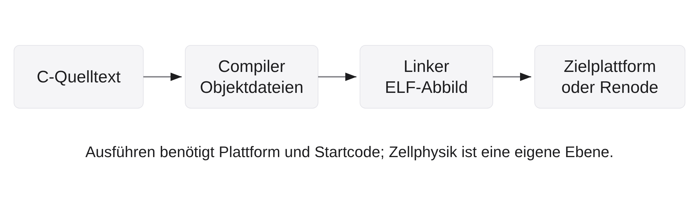
Das ausführbare Beispiel dieses Blatts nutzt den Host; RISC-V GCC und Renode sind Zielwerkzeuge.
Im SoC müssen Datenwege zusammenpassen
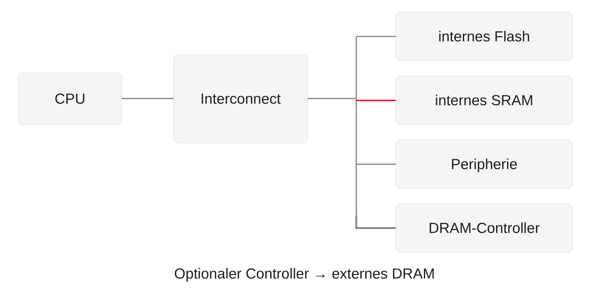
Rechenkern, Speicherbaustein und Zugriffsweg sind verschiedene Bestandteile.
Bytezahl, Bitzahl und Zellbauteile
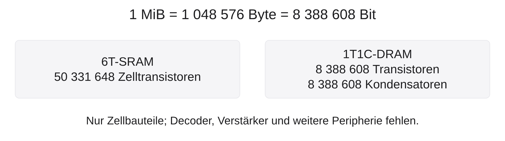
\(1\,\mathrm{MiB}=2^{20}\,\mathrm{Byte}\); \(1\,\mathrm{MB}=10^6\,\mathrm{Byte}\).
Gemeinsamer Adressraum ist nicht ein einziger Port
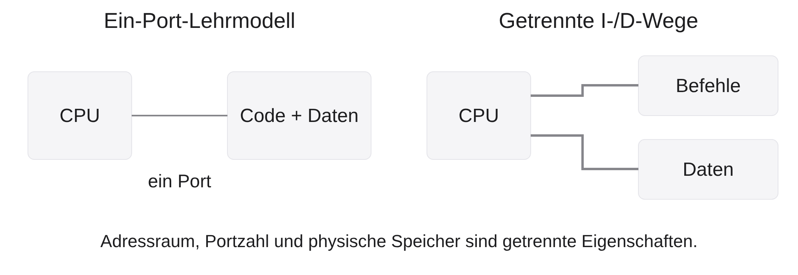
Das einfache Ein-Port-Modell kann Fetch und Datenzugriff nicht gleichzeitig bedienen.
Latenz und Bandbreite messen Verschiedenes
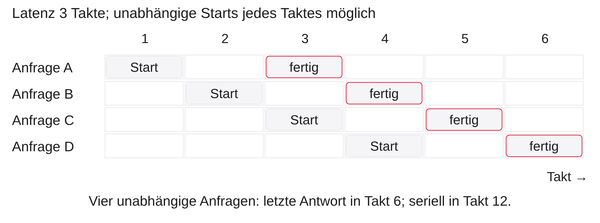
Memory Wall: benötigte Daten können die Rechnung begrenzen.
Hierarchie: mehrere Speicher für mehrere Aufgaben
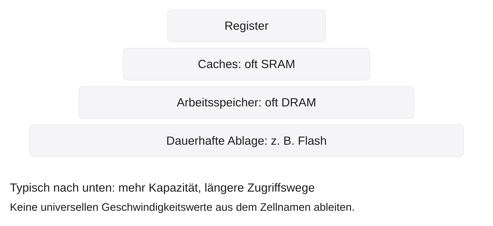
Ein Cache ist eine Rolle; SRAM ist eine Zelltechnologie.
Flüchtig und wahlfrei sind unabhängige Eigenschaften
| volatil |
dauerhafter Erhalt benötigt Versorgung |
SRAM, DRAM |
| nichtflüchtig |
Erhalt ohne laufende Versorgung spezifiziert |
Flash, ROM |
| wahlfrei lesbar |
gewünschte Stelle gezielt auswählen |
SRAM, speicherabbildbares NOR |
| seitenorientiert |
Anfrage verarbeitet größere Einheit |
rohes NAND |
volatile in C ist keine Bezeichnung der Zellphysik.
ROM-Familie: Lesen und Ändern getrennt betrachten
Nichtflüchtig bedeutet nicht unveränderbar.
Floating Gate: Ladung verändert die Schwellspannung
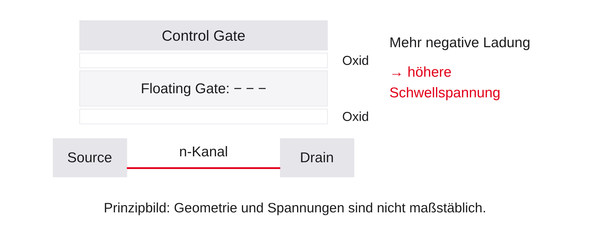
Beispiel einer Flash-Zelltechnik; Charge-Trap-Flash verwendet eine andere Speicherstruktur.
Flash-Modell: Programmieren ist kein beliebiger Store
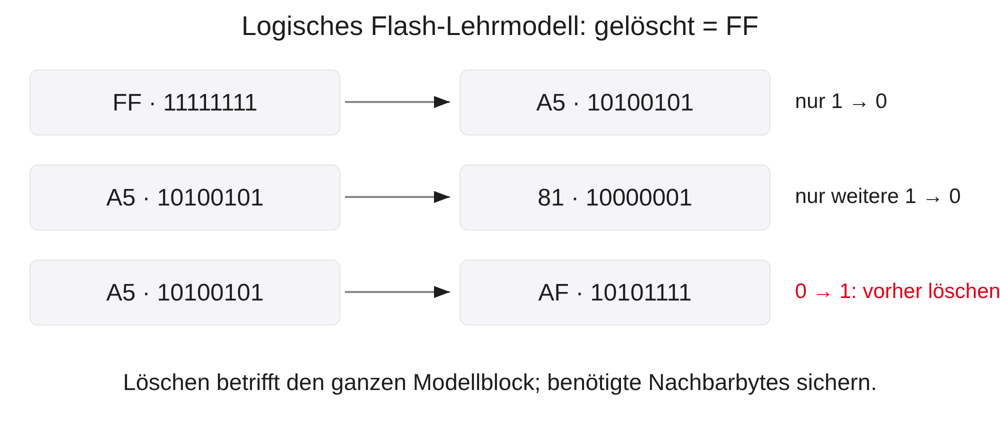
Gelöscht \(=1\); Programmieren setzt ausgewählte Bits von \(1\) nach \(0\).
NOR und NAND: Zellanordnung und Schnittstelle
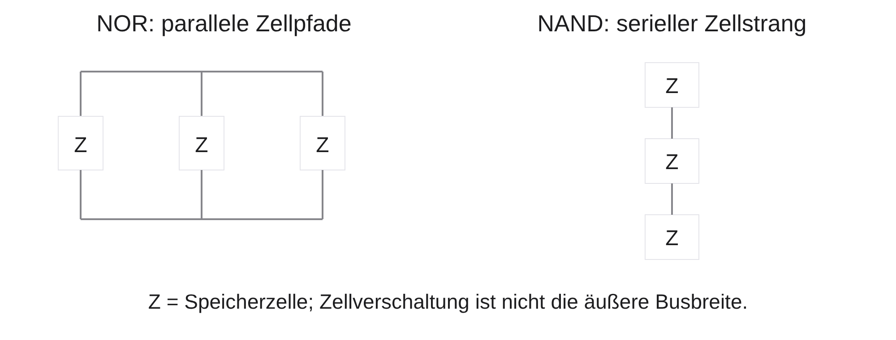
Page, Löschblock und CPU-Lesewort sind verschiedene Größen.
XIP braucht einen ausführbaren Leseweg
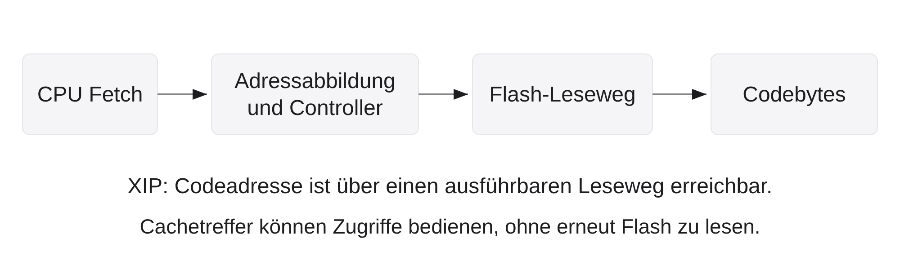
Execute-in-Place ist eine Systemfähigkeit, kein Nachweis aus dem Namen NOR allein.
Verschleiß verteilen, nicht abschaffen
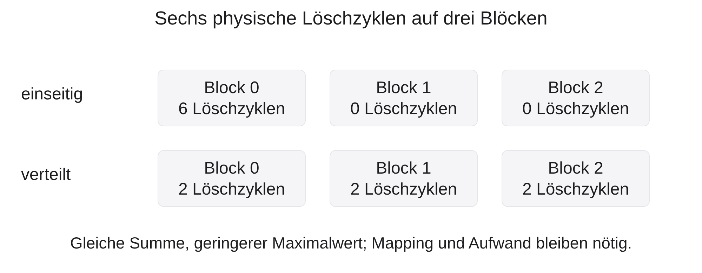
Wear Leveling braucht eine Zuordnung und freie nutzbare Bereiche.
Speicher nach Nutzung auswählen
| Firmware über Abschalten bewahren |
nichtflüchtig und passender Code-Leseweg? |
| Häufig veränderte Zwischensummen |
beschreibbarer Arbeitsspeicher ausreichend? |
| Selten geänderte Konfiguration |
passendes Update- und Löschverfahren? |
| Große Datenmenge |
Kapazität, Zugriff und Controller passend? |
„Code“ und „Daten“ sind Nutzungen, keine Zellbauarten.
Papierphase 1: Größen, Wege und Flashbits
Übungsblatt, Aufgaben 1–2 · 10 Minuten
- Byte- und Bitzahlen sowie Zellbauteile getrennt zählen
- Ein-Port-Konflikt vom gemeinsamen Adressraum unterscheiden
- Flashänderung und vollständigen Löschbereich prüfen
Ein Inverter macht aus null eins
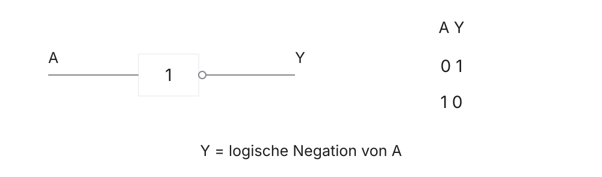
Logische Werte stehen für Spannungsbereiche, nicht für einzelne Elektronen.
Rückkopplung hält zwei mögliche Zustände
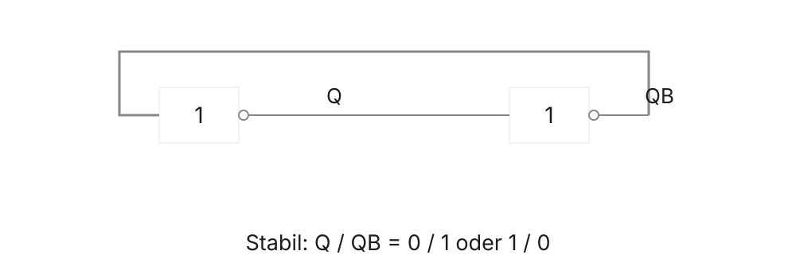
\(Q=\neg Q_B\) und \(Q_B=\neg Q\).
Ein CMOS-Inverter braucht zwei Transistoren
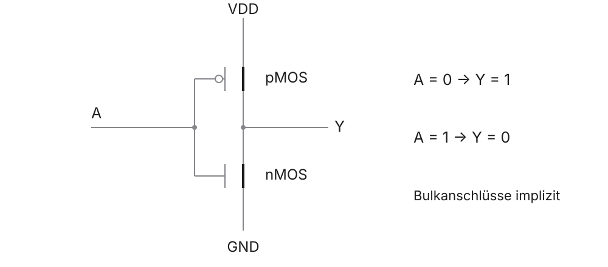
Eingang 0: oberer Pfad leitet · Eingang 1: unterer Pfad leitet.
6T-SRAM: Halten und Zugriff
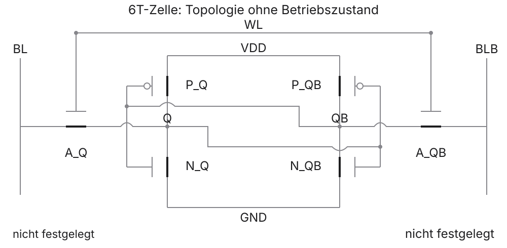
WL: Word Line · BL / BLB: komplementäre Bit Lines.
Halten: WL trennt die Zelle vom Zugriff
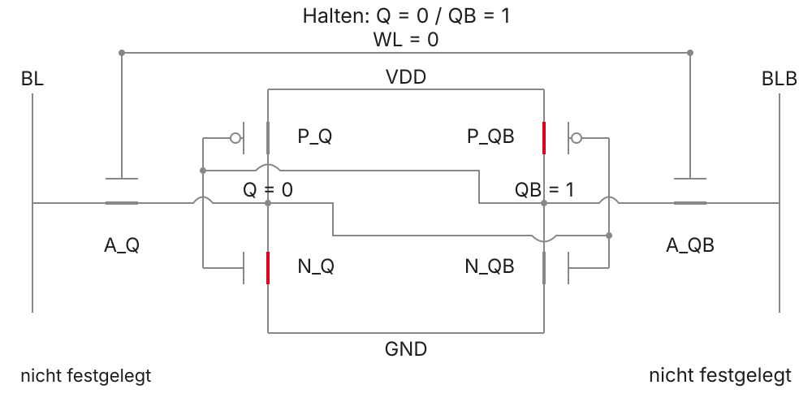
Versorgung vorhanden: \(Q=0\), \(Q_B=1\) bleibt durch Rückkopplung stabil.
Lesen: eine kleine Differenz genügt
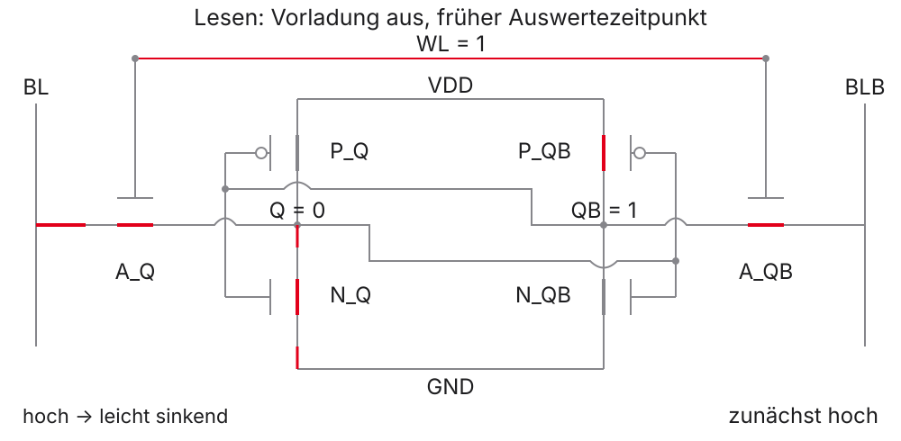
Vorladen → Vorladung aus → WL hoch → Differenz auswerten → WL niedrig.
SRAM-Lesen als qualitative Zeitfolge
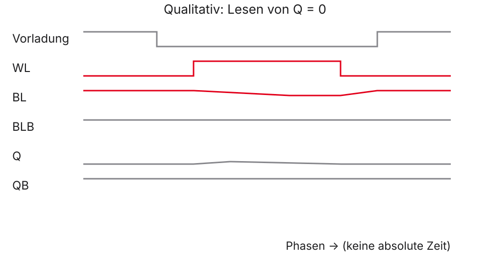
Zeitfolge und Spannungsform sind Lehrmodelle, keine Simulation.
Schreiben: den neuen Wert aktiv erzwingen
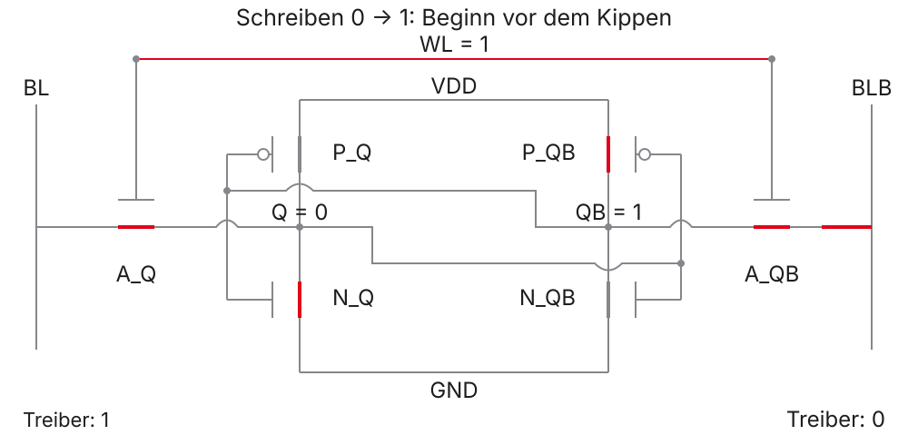
Für \(Q:0\rightarrow1\): BL hoch und BLB niedrig, bevor WL steigt.
Schreiben endet mit erneutem Halten
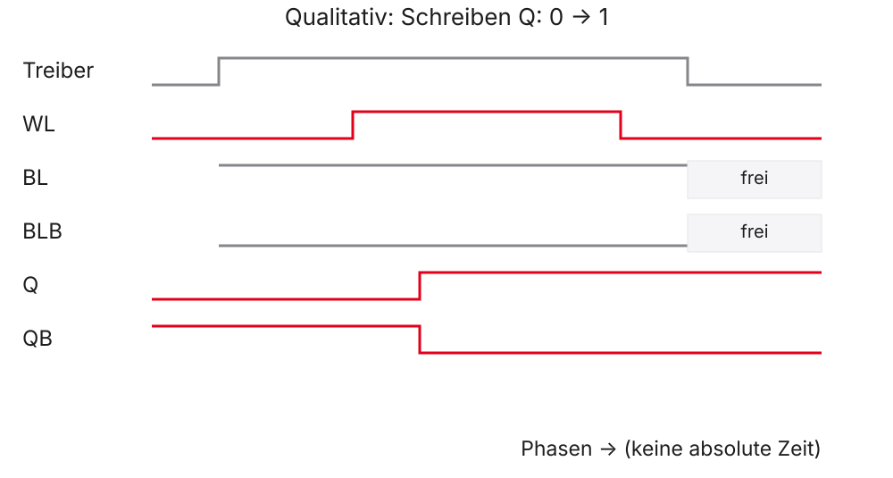
Schreibdaten bereit → WL hoch → Umschalten → WL niedrig → Treiber frei.
SRAM: schnell nutzbar, aber nicht kostenlos
| Halten ohne periodischen Refresh |
Versorgung und Leckströme bleiben relevant |
| Lesen erhält bei korrekter Auslegung den Inhalt |
Lesestabilität muss gesichert sein |
| Häufiges Überschreiben ohne Flash-Löschblock |
sechs Zelltransistoren plus Peripherie |
Typische Rollen: interne Arbeitsspeicher, Cache-Daten und kleine Puffer.
Papierphase 2: die 6T-Zelle erklären
Übungsblatt, Aufgabe 3 · 15 Minuten
- Für beide stabilen Zustände die leitenden Invertertransistoren nennen
- Lesen von Schreiben und Halten unterscheiden
- Vorladung, Wortleitung und Schreibdaten zeitlich ordnen
DRAM: ein Transistor, ein Kondensator
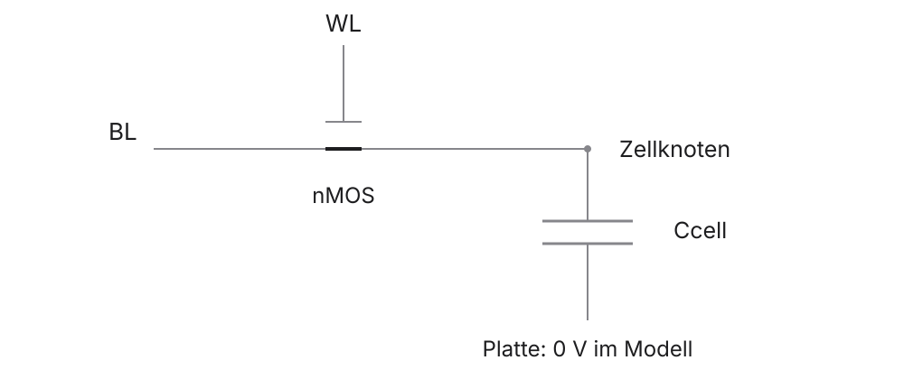
WL niedrig: Ladung weitgehend isoliert · WL hoch: Ladungsaustausch mit BL.
Elektrische Ladung ist noch kein logischer Wert
\[q_\mathrm{el}=C_\mathrm{cell}(V_\mathrm{cell}-V_\mathrm{plate})\]
Lehrmodell: \(C_\mathrm{cell}=30\,\mathrm{fF}\), \(V_\mathrm{plate}=0\,\mathrm{V}\).
- Hoher Zellpegel \(1{,}2\,\mathrm{V}\): \(q_\mathrm{el}=36\,\mathrm{fC}\)
- Niedriger Zellpegel \(0\,\mathrm{V}\): \(q_\mathrm{el}=0\,\mathrm{fC}\) im idealen Modell
Leckage macht Refresh erforderlich
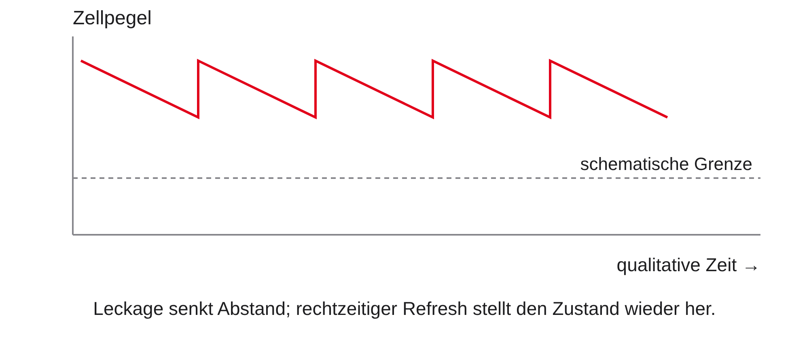
Refresh erhält Inhalte innerhalb spezifizierter Bedingungen; er ist kein neues Nutzdatum.
Vor dem Lesen: BL auf halbe Versorgung
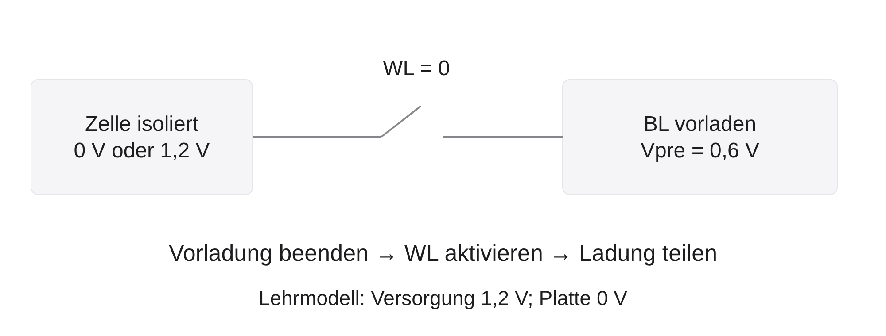
Lehrwerte: \(V_\mathrm{DD}=1{,}2\,\mathrm{V}\) und \(V_\mathrm{pre}=0{,}6\,\mathrm{V}\).
Ladungsteilung: etwa 55 mV vom Vorladepegel
\[V_\mathrm{share}=\frac{C_\mathrm{cell}V_\mathrm{cell}+C_\mathrm{BL}V_\mathrm{pre}}{C_\mathrm{cell}+C_\mathrm{BL}}\]
\(C_\mathrm{cell}=30\,\mathrm{fF}\), \(C_\mathrm{BL}=300\,\mathrm{fF}\), \(V_\mathrm{pre}=0{,}6\,\mathrm{V}\).
| \(1{,}2\,\mathrm{V}\) |
\(0{,}6545\,\mathrm{V}\) |
\(+54{,}5\,\mathrm{mV}\) |
| \(0\,\mathrm{V}\) |
\(0{,}5455\,\mathrm{V}\) |
\(-54{,}5\,\mathrm{mV}\) |
Sense, Restore und Precharge sind verschiedene Phasen
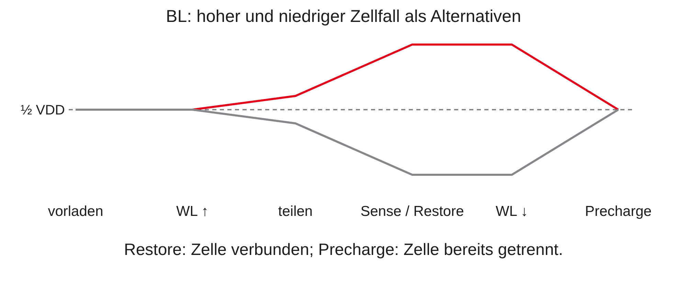
Restore bei verbundener Zelle; Precharge nach deren Trennung.
Organisation: Bank, Zeile, Spalte und Byte
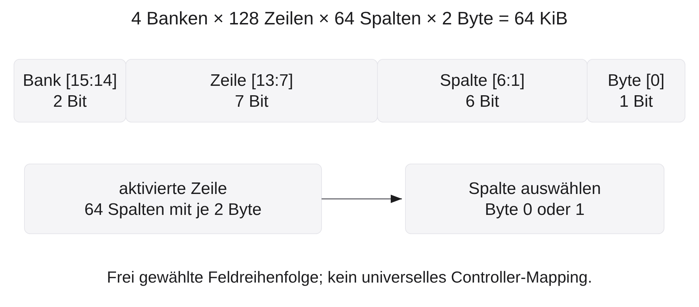
\(4\cdot128\cdot64\cdot2\,\mathrm{Byte}=64\,\mathrm{KiB}\).
Eine offene Zeile verändert die Befehlsfolge
Befehlsfolge erklärt Aufwand; Datenblatt und Controller bestimmen die Zeiten.
DDR verdoppelt Transfers, nicht die Taktfrequenz
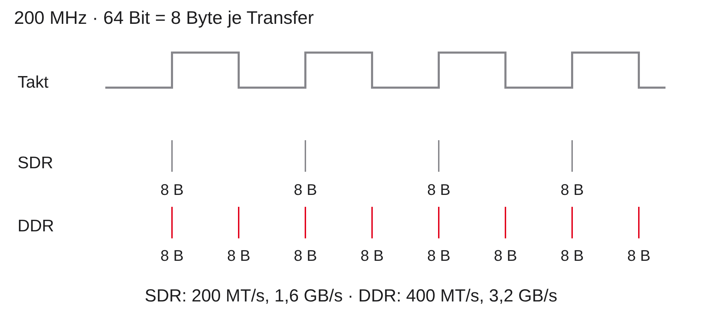
\(200\,\mathrm{MHz}\cdot2\cdot8\,\mathrm{Byte}=3{,}2\,\mathrm{GB/s}\) als Spitzenrate.
Papierphase 3: DRAM rechnen und ordnen
Übungsblatt, Aufgabe 4 · 15 Minuten
- Ladungserhaltung für hohe und niedrige Zelle anwenden
- Restore von Precharge unterscheiden
- Im vorgegebenen Modell Bank, Zeile, Spalte und Byte bilden
Dual-Port bezeichnet Zugriffsmöglichkeiten
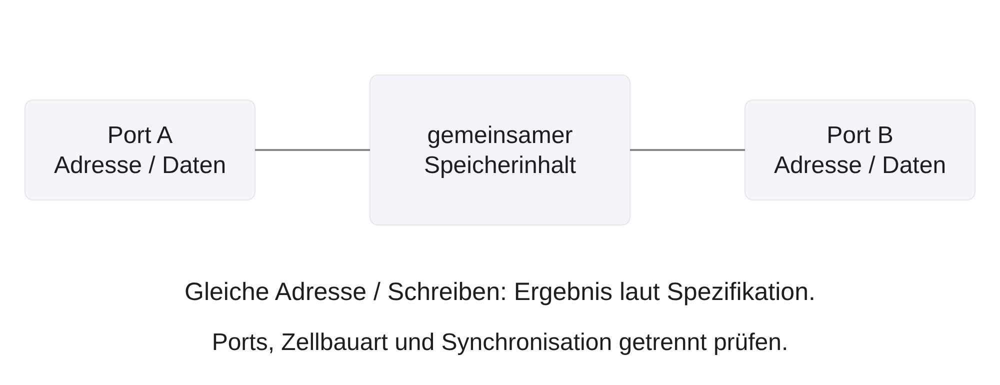
Zwei Ports ersetzen keine Regel für Konflikte oder unterschiedliche Takte.
FIFO: Ringposition allein verrät nicht voll oder leer
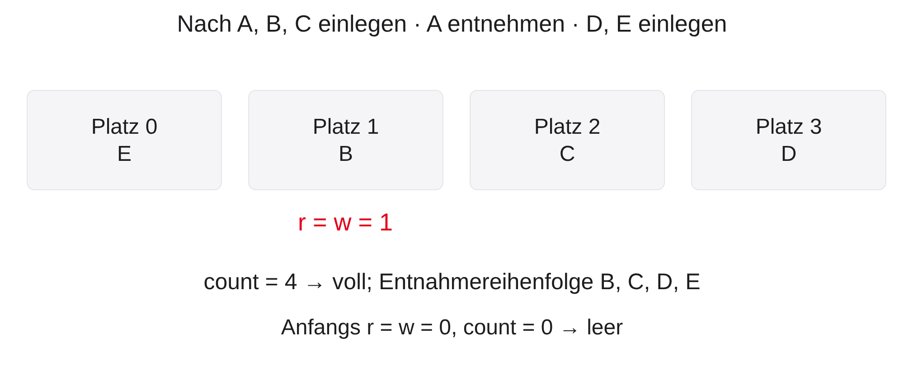
Vier nutzbare Plätze; count unterscheidet leer und voll.
Memory Map: Grenzen ausdrücklich angeben
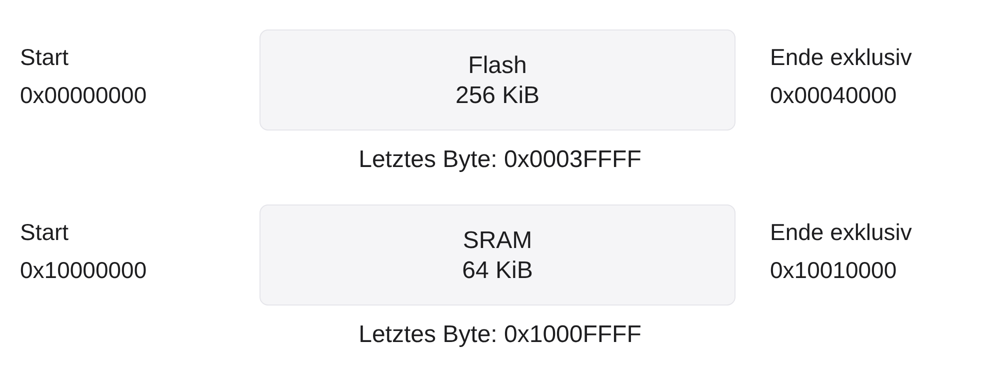
Bereich \([\mathrm{Start},\mathrm{Ende})\): Ende ist die erste ausgeschlossene Adresse.
Ein 32-Bit-Zugriff braucht vier gültige Byteadressen
Lehrmodell: SRAM \([\mathtt{0x10000000},\mathtt{0x10010000})\).
0x1000FFFC |
ja, bis 0x1000FFFF |
ja |
0x1000FFFF |
nein |
nein |
0x10010000 |
nein |
ja |
Die Prüfung erfolgt mit ganzen Zahlen; wir dereferenzieren diese Adressen nicht auf dem Host.
C-Objekte und typische Abschnitte
#include <stdint.h>
const uint32_t lookup[4] = {1, 2, 3, 4};
uint32_t counter = 3;
uint8_t buffer[16];
uint32_t read_snapshot(void) {
return lookup[counter % 4] + buffer[0];
}
Typisches Modell: .text Code · .rodata Konstanten · .data Initialwerte · .bss Nullinitialisierung.
.data hat ein Ladebild und eine Laufzeitadresse
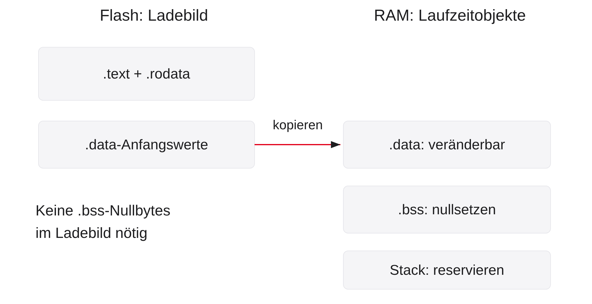
VMA: Laufzeitadresse · LMA: Adresse des Ladebilds.
Startup stellt die vereinbarte C-Umgebung her
Der Linker berechnet Anordnung; der Startcode führt Initialisierung aus.
Linkerskript: Regionen und Abschnitte zuordnen
MEMORY {
FLASH (rx) : ORIGIN = 0x00000000, LENGTH = 256K
RAM (rw) : ORIGIN = 0x10000000, LENGTH = 64K
}
SECTIONS {
.text : { *(.text*) } > FLASH
.rodata : { *(.rodata*) } > FLASH
.data : { *(.data*) } > RAM AT> FLASH
.bss (NOLOAD) : { *(.bss*) *(COMMON) } > RAM
}
Didaktischer GNU-ld-Ausschnitt; Startcode, Stack und weitere Abschnitte fehlen.
Zellprinzip, Schnittstelle und Software zusammenführen
| Zelle |
6T-SRAM oder 1T1C-DRAM |
Wie bleibt der Zustand erhalten? |
| Zugriff |
Ein-Port, Dual-Port, Controller |
Welche Zugriffe sind möglich? |
| Organisation |
Zeile, FIFO, Adressbereich |
Wie werden Inhalte ausgewählt? |
| Software |
Abschnitte und Startup |
Wo liegen Objekte, wie beginnen sie? |
Vorlesung 2 nutzt diese Grundlage für Lokalität und Caches.
Papierphase 4 und Abschlussquiz
Aufgaben 5–6: 15 Minuten · Quiz: 15 Minuten
- Vollständige Zugriffe und Speicherbedarf prüfen
- Ladebild, Laufzeitobjekt und Nullinitialisierung unterscheiden
- FIFO-Zustände erklären; anschließend Antworten begründen
Was Sie jetzt erklären können
- Flash ändern: Bits, Löschbereich und Zugriffsweg beachten
- SRAM und DRAM: Halten, Lesen und Wiederherstellen unterscheiden
- Kapazität, Datenrate und Adressgrenzen nachvollziehbar rechnen
- Firmware: Anordnung und Initialisierung auseinanderhalten
Literatur: Harris & Harris, Digital Design and Computer Architecture — RISC-V Edition; vertiefend Patterson & Hennessy, Computer Organization and Design — RISC-V Edition.